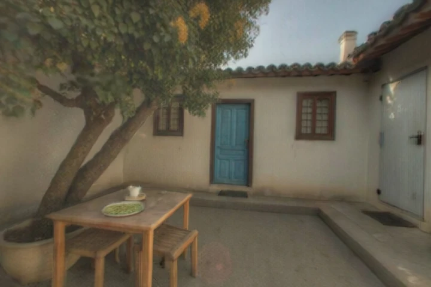

一起补上细节三位合成角色，异步留下回忆。
献给小时候的我们 / A WORLD AS A GIFT有些地方，
有些地方，
要一起才记得。
你记得树，我记得门。
把散落在几个人心里的回忆，
放回一个可以走进去的地方。

2002 · 秋天
每个细节有来处核对年代与分歧，保留推测。
走进去，再留下新版两个真实世界，旧版一直保留。
这是可操作的预置案例：回忆与整理记录为演示编写，两个世界由 World Labs 提前生成。交互进度仅保存在当前浏览器，不冒充在线 AI 或远程多人服务。
THE OSMANTHUS COURTYARD / 无照片的口述案例
桂花树下的院子
献给那些一起坐过树下的人。
THE CONVERSATION
不用记得完整。
你说的一点，我记得的一点。
体验其他成员如何补充回忆。以下两条为预设示例。
A SCENE WITH SOURCES
这是我们记得的地方吗？
点开来源，回到当时的那句话。
仍然是推测
场景描述
第一版 · 已保存
桂花又开了。
World Labs · 真实生成 · 已保存
秋日 · 江南小院风一吹，
风一吹，
又像是那个下午。
轻量版约 6 MB · 清晰版约 12 MB
3D 暂时没能打开
拖动环顾 · 长按方向按钮移动 · 电脑也可用 W A S D
已保存的生成结果，反复浏览不再收费。
打开备用全景 ↗查看 3D 支持与加载诊断
当前查看器需要 WebGL 1、实例化扩展与 Web Worker。远程或受限环境可能禁用相关能力。以下信息仅在本页显示，不自动上传；可选中文字复制。
来源与确认记录始终保留
THIS VERSION STAYS
新的回忆来了，旧的下午还在。
每个世界保留对应的确认描述和来源。
“还有那辆红色单车。”
小满看过院子，又想起了一件事。
满
还漏了一样：蓝门右边、盆栽旁边，靠墙停着一辆红色的小自行车。把它也留下吧。
新增细节
在蓝门右侧的盆栽旁加入红色小自行车。
原先的树、方桌与蓝门继续保留在描述里。本次为重新生成，其他空间细节可能变化，不承诺像局部修图一样精确。
关联第二个提前生成的真实世界；本次点击不调用付费服务。